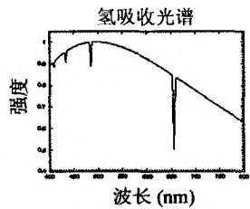
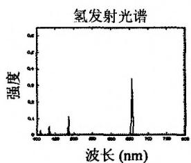
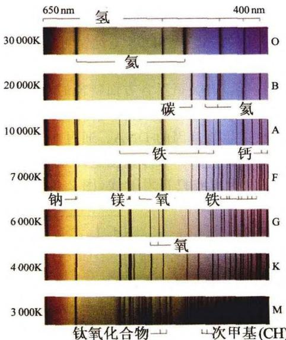
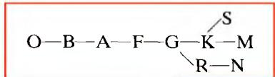
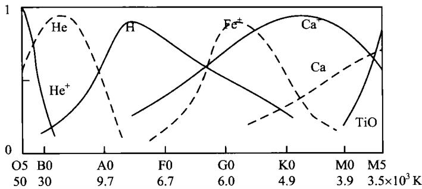

天体物理学的诞生，直接源于自19世纪早期开始的分光学、光度学与照相方法对太阳和恒星的研究。回顾天体物理学的发展史就可以发现，直到19世纪上半叶，尽管经典物理学已经取得了许多重大成就，但人们仍无法将物理学与遥远的天体联系起来。几个著名的例子是，1825年法国哲学家孔德(A. Comte)在他的《实证哲学讲义》里说：“恒星的化学组成是人类绝不可能得到的知识。”1840年法国天文学家阿腊果(F. Arago)仍然相信，太阳上面是可以住人的。直到1860年，法国天文普及作家弗拉马利翁(C. Flammarion)还在他的《众生世界》一书中写道：“要解决行星世界上的热度问题，我们所要知道的数据是我们永远得不到的。”但天体物理学的迅速发展很快就把这些传统观念一扫而空，其中天体分光(光谱)的研究更是起到了至关重要的作用。
天体分光学的创始人当属德国光学家夫琅和费(J. Fraunhofer)。虽然远在1666年牛顿就已经使白光透过棱镜分解为彩色光带(“光谱”),1802年英国物理学家沃拉斯顿(W. Wollaston)也曾将光线穿过光缝后再透过棱镜，观察到光谱中有黑线出现，但只有夫琅和费首先对日光和星光中的这些黑线做了系统的研究。他在1817年发表文章说，“我用许多实验和各种不同的方法，证明这些谱线和谱带实在是日光固有的性质，绝不是从衍射、光幻视觉等原因而来。”他公布的太阳光谱中有黑线几百条之多，至今仍被称为“夫琅和费谱线”。他还把目光投向月亮、金星和火星，在这些天体的光谱中也发现有太阳光谱里的那些黑线，而且也在相同的位置上。后来，他又对恒星进行了光谱观测，发现有些恒星具有和太阳光谱相似的谱线，而有些恒星的谱线与太阳谱线有很大不同。但是，在长达近40年的时间里，夫琅和费的研究并没有得到学术界的认可。那时的物理学家们正在忙于争论光的粒子说和波动说，化学家们的注意力也正集中在道尔顿的原子论以及定比定律的争论上。夫琅和费自己又缺少打开太阳谱线神秘图谱的钥匙，他自己也不能明确肯定光谱线在化学分析中所起的作用。
关键性的突破是德国物理学家基尔霍夫(G. Kirchhoff)完成的，并由此奠定了天体物理学的基础。1859年他与化学家本生(R. Bunsen)合作，研究了火焰的光谱和电弧里金属蒸汽的光谱，发现炽热的固体或液体发射连续光谱，气体则发射不连续的明线光谱，并在此基础上发表了分光学上著名的基尔霍夫定律：
（1）每一种化学元素在高温下都能产生辐射而发出独特的明线光谱；
他将太阳的谱线和实验室里各种元素的谱线相比较，立即证认出太阳中有许多地球上常见的元素，如钠、铁、钙、镍等。基尔霍夫的发现打破了天体和地球之间的神秘界限，证明人们熟知的化学元素存在于天体上，就如同存在于地球上那样。如果说牛顿力学实现了天体运行规律和地面物体运动规律的统一，则基尔霍夫的发现实现了天体和地球物质成分的统一。
自基尔霍夫之后，天体光谱的研究获得了迅速的发展。1863到1864年间，英国天文爱好者哈根斯(W. Huggins)和意大利教士塞西(A. Secchi)分别用分光镜研究恒星。他们的研究在性质上是互补的：塞西用低色散度摄谱仪观测了许多恒星，目的是做光谱的分类；哈根斯用高色散度摄谱仪只观测少数亮星的光谱，目的在分析恒星的物质组成。1865年哈根斯证认出一些恒星的元素谱线，例如钠、铁、钙、镁、铋等，并根据谱线的多普勒效应测定了一些恒星的视向速度。例如他于1868年发现，天狼星是以大约每秒29英里的视向速度离开我们而去。这一开创性的研究具有极其重大的意义：自那以后，天文学家不仅可以测量天体速度在天球上的投影部分（即速度的横向部分，称为自行），而且可以测量沿视线的径向部分。
后来哈勃正是利用这一方法发现了宇宙的膨胀。1869年英国天文学家洛基尔(N. Lockyer)在太阳日珥光谱中首次发现氦线，之后到1895年才由英国化学家雷姆塞(W. Ramsay)在地球上发现了氦。这可以说是宇宙物质成分统一论的一个巨大成就。
早期恒星的光谱观测主要是利用摄谱仪，每次只能观测一颗星且分辨本领不高。1885年美国天文学家皮克林(E. Pickering)首创物端棱镜方法，即把一块大玻璃棱镜放在望远镜物镜的前端，就可以同时拍得视场里所有亮星的光谱。但这种方法的分辨本领还不是很高。要得到较高分辨率的光谱，后来采用棱镜光谱仪，即将棱镜放在望远镜焦点后面，使已经成像的星光经过棱镜分光后再获得光谱。然而这样做每次只能得到一颗恒星的光谱。分光能力更强的是光栅摄谱仪，通常使用的是每毫米刻100条至1000条线的大面积光栅，拍摄的光谱非常清晰，但一次也只能获得一颗恒星的光谱。现代最新的技术是利用光导纤维把望远镜焦面上的许多星像引导到摄谱仪上，再用CCD成像和计算机处理，就可以同时得到许多颗恒星的高分辨率光谱。例如美国的SDSS望远镜可以同时拍摄600个天体的光谱，我国正在制造的LAMOST望远镜更把这个数字提高到了4000个。
恒星的光谱为我们提供了有关恒星各方面特征的丰富信息，例如表面温度、光度、化学成分、质量、直径、磁场、自转乃至表面气体压力及运动状况等等，因而人们常把光谱比喻为人的指纹或生物基因的DNA。通过对恒星光谱的系统研究，我们甚至可以了解恒星一生的演化过程。大多数恒星的光谱特征是连续谱背景上有许多吸收线，少数恒星兼有发射线或只有发射线(图2.4,2.5)。这些谱线代表着各种不同的化学元素。但是，由于恒星内部对光线几乎是不透明的，所以这些谱线所反映的，只是关于恒星表面很薄一层气体(大气)的信息，这一薄层的厚度通常不及恒星半径的千分之一。最初天文学家曾简单地把恒星大气再分为两层来解释恒星光谱：底层气体炽热而稠密，产生连续光谱；上层较冷且稀薄，其中的原子吸收了来自底层的辐射，因而产生吸收线。现在我们知道，恒星大气中的各种原子及分子都同时在发射和吸收光子，这是一个非常复杂的过程，需要用专门的辐射转移理论来描述。但这已超过本书的讨论范围，有兴趣的读者可以参阅有关恒星大气物理方面的教科书。恒星大气辐射转移的总结果是，大多数恒星的大气中，原子分子在一些波长处发出的辐射强度弱于相应的吸收强度，所以外部观测者就看到连续谱背景上有一系列吸收线。只有在少数的恒星大气中结果是相反的，此时观测者就看到明亮的发射线。


图2.4 光谱吸收线与发射线
图2.5 各光谱型的典型光谱天文学家将拍摄到的恒星光谱与实验室测得的各种元素谱线进行对比，就可以确定恒星的化学组成，同时，根据谱线的强度还可以确定各元素的丰度。自19世纪中期以来，一百多年的天文观测已经积累了极其丰富的恒星光谱资料。这些资料表明，绝大多数恒星的元素含量基本与太阳相似。这些恒星的外层中，氢的数量占优势，其次是氦。当然也有极少数恒星是例外，例如一些恒星的碳丰度非常之高，也有些恒星含有丰富的稀土元素。还有的恒星光谱中观测到一些稀有元素，例如金属锝(Tc)。锝是地球上第一种人工合成的化学元素，天然的锝元素在地球上并不存在。下面的讨论中我们将了解到，恒星的光谱特征主要与恒星外层的温度有关。温度差别影响到恒星外层各种元素原子的电离和激发状态，这种影响明显地反映到恒星的光谱之中。
在对自然现象(包括社会现象)的本质做出深入了解之前,先对大量观测调查数据进行统计分类,从中发现某些具有启示意义的规律性,这是许多研究工作者常采用的办法。元素周期表的发现就是这样一个成功的例子。恒星光谱的分类也是如此,尽管在开始这项工作时人们并不了解恒星的真实结构和演化,但后来的研究表明,恒星的光谱分类是揭示恒星奥秘的先驱性工作,它也是发现赫罗图(见2.4节)的基础,而赫罗图在恒星物理的研究中起着举足轻重的作用。
最早对恒星光谱进行分类的是意大利教士塞西。他在1868年刊布了一册包含4000颗恒星的表，并按光谱特征把恒星分为四类：1)白色星，例如天狼和织女星，光谱只有四条氢的黑线；2)黄色星，如五车二（御夫座 \alpha 星）和大角星（牧夫座 \alpha 星），光谱和太阳相同；3)橙色星和红色星，如参宿四（猎户座 \alpha 星）和心宿二（天蝎座 \alpha 星），光谱里有明暗相间的光带；4)其他为一些暗红色的星。塞西猜想这样的分类和恒星的温度有一定的关系，但对于光谱中的谱线和光带，却没有进一步研究它们和构成恒星的化学元素之间的联系。
1885年皮克林用物端棱镜方法成功拍摄到昴星团内40颗恒星的光谱后，哈佛大学天文台于1886年在该台口径 28\mathrm{cm} 的折射望远镜的物镜前，安装了一块物端棱镜，利用照相方法大量拍摄恒星光谱，开始了大规模的恒星光谱分类的研究。这项工作是在皮克林的领导下进行的，他组织了以坎农（A. Cannon）为首的十几位女天文学家，在长达近40年的时间里，对全天20多万颗亮于8等的（以及部分暗至11等的）恒星光谱进行了分类，研究结果于1918-1924年间陆续刊布在HD星表及其续篇上。HD星表是为纪念1882年去世的美国天文学家德雷伯（Henry Draper)而开始编制的，德雷伯是光谱照相术的开拓者之一，他生前拍摄了多颗恒星的光谱。哈佛天文台的恒星光谱分类是近代天文学史上第一项规模浩大的科学工程，HD星表也成为天文学史上的鸿篇巨制，为后人对恒星的研究提供了极其丰富的观测资料。到20世纪70年代初，全世界按哈佛系统做过分类的恒星总数已经达到90万颗左右。
哈佛天文台采用的恒星光谱分类方法是基于颜色相同的恒星，其光谱中各元素谱线的特征也基本相同。由于恒星的颜色直接与恒星表面的有效温度相关，因而哈佛分类法是按有效温度递降的次序，把恒星光谱分为以下类型：

有效温度从左到右逐渐下降。其中主序列从O型到M型，其光谱最显著的区别是，热星的光谱中谱线较少，且多为高电离能的原子或离子谱线；而较冷星的光谱中谱线较多，并出现金属线以至明显的分子吸收带（图2.5）。每一种光谱型又根据谱线的相对强度分为10个次型，例如温度最高的B型星是B0，接着是B1，B2，…，B9。但实际上并不是每一光谱型都有完整的10个次型，有些次型是缺项。例如最热的O型星是O3，至今没有观测到O0，O1和O2。我们的太阳是G2型，织女星是A0型，天狼星是A1型，北极星是F8型。主序列之外，在冷星一端还有两个分支：其中R,N与K,M型光谱类似，但含有较多的碳元素，故称为碳星（因而R,N型也称C型）；S型含有很强的低温重金属如TiO，ZrO的分子吸收带。
表 2.2 典型光谱型恒星的主要特征
| 光谱型 | 颜色 | 温度 | 光谱特征 |
|---|---|---|---|
| O | 蓝白 | T_{e} \geqslant 30\,000\,\text{K} | 紫外连续谱强,有弱 HeII,HeI,HI 线 |
| B | 蓝白 | 10\,000\,\text{K} \leqslant T_{e} \leqslant 30\,000\,\text{K} | HeI 线在 B2 型达到最大,B0 之后 HeII 消失,H 线逐渐变强 |
| A | 白 | 7\,500\,\text{K} \leqslant T_{e} \leqslant 10\,000\,\text{K} | H 线在 A0 达到极大,CaII 线增强,出现弱的中性金属线 |
| F | 黄白 | 6\,000\,\text{K} \leqslant T_{e} \leqslant 7\,500\,\text{K} | H 线变弱但仍明显,CaII 线大大增强,电离和中性金属线的强度增加 |
| G | 黄 | 5.000\,\text{K} \leqslant T_{e} \leqslant 6\,000\,\text{K} | 属太阳谱型,CaII 线很强,Fe 及金属线强,H 线弱 |
| K | 橙 | 3\,500\,\text{K} \leqslant T_{e} \leqslant 5\,000\,\text{K} | 金属线主导,连续谱蓝端变弱,分子带 (CN,CH)变强 |
| M | 红 | T_{e} \leqslant 3\,500\,\text{K} | 分子带主导,中性金属线强 |
20 世纪初人们曾经认为，恒星的光谱型序列反映了恒星的演化顺序，即由 O 型星逐渐冷却而演化为 M 型星。因此通常把 O, B, A 型称为早型星，把 K, M 型称为晚型星。现在我们知道，光谱型序列与恒星演化顺序实际上并无任何联系，但这样的称呼仍然被习惯性地保留了下来，一直沿用至今。
哈佛分类法是基于温度的一元分类法。20世纪40年代，美国天文学家摩根（W. Morgan）和基南（P. Keenan）提出了一种以温度和光度为基础的二元分类法，称为MK分类系统。这种分类系统的表示方法是，在哈佛分类标记后面，加上一个罗马数字表示光度，即：I，超巨星；II，亮巨星；III，正常巨星；IV，亚巨星；V，主序星（矮星）；VI，亚矮星；VII，白矮星。这里巨星和矮星指的是光度的大小，光度大的为巨星，反之为矮星。主序星的定义下节将会介绍。我们的太阳就是一颗主序星，按照MK分类系统，它的光谱型是G2V。
由图 2.5 及表 2.2 可以看出，从早型到晚型谱线总的特点是：氢线强甚至有氦线出现 \Rightarrow 金属线强 \Rightarrow 分子线强。从本质上说，这是由于不同元素原子的激发、电离程度随温度的高低而不同所致。下面我们对此做一定性分析。
当气体处于热平衡时，不同能级的原子数之比由玻尔兹曼分布给定。令 n_i 和 n_j 分别代表能级 i 和 j 的原子数， E_i 和 E_j 分别为两个能级的能量，则这两个能级上的原子数之比为
\frac {n _ {j}}{n _ {i}} = \frac {g _ {j}}{g _ {i}} \exp \left[ - \frac {E _ {j} - E _ {i}}{k T} \right]\tag{2.12}
式中 T 为气体温度， g_{j} 和 g_{j} 分别为两个能级相应的统计权重（反映能级的简并程度）。(2.12)给出的是所有原子都处于激发态时的情况。此时如果电子在不同能级之间跃迁，就会在光谱中出现发射线或吸收线，相应光子的能量为 E_{r} = h\nu = E_{j} - E_{i} 。以氢原子为例，它的第一激发态与基态能量之差大约为 10\mathrm{eV} ，故在 T \simeq 5700\mathrm{K} （大约等于太阳表面的温度）时，处于第一激发态的氢原子数目与基态氢原子数目之比约为 n_{1} / n_{0} \simeq 4 \times 10^{-9} 。如果温度升高，则(2.12)表明 n_{1} / n_{0} 也将相应增大，即更多的氢原子将处于激发态。
如果温度足够高,一些原子的动能将大于电离能(从最低能级拉出电子所需的最低能量),原子之间的碰撞就会使原子发生电离。反过来,电离原子也会发生复合并发射光子。如果电离与复合过程达到动态平衡,则各种离子之间的相对丰度由萨哈(M. Saha)方程给出
\frac {n _ {\mathrm{e}} n \left(\mathrm{X} _ {r + 1}\right)}{n \left(\mathrm{X} _ {r}\right)} = \frac {2 g _ {r + 1}}{g _ {r}} \frac {(2 \pi m _ {\mathrm{e}} k T) ^ {3 / 2}}{h ^ {3}} \exp \left(- \frac {E _ {r}}{k T}\right)\tag{2.13}
式中 n(\mathbf{X}_r) 和 n(\mathbf{X}_{r + 1}) 分别为元素 \mathbf{X} 的 r 次和 r + 1 次电离态的数密度（ r = 0 相当于中性原子）， n_{\mathrm{c}} 为自由电子数密度， g_r 和 g_{r + 1} 分别为 \mathbf{X}_r 和 \mathbf{X}_{r + 1} 相应的原子基态简并度， h 为普朗克常数。等号右边的第一个因子2代表电子的两个自旋态（即 g_{\mathrm{e}} = 2 ）， E_{r} 是从 \mathbf{X}_r 到 \mathbf{X}_{r+1} 的电离能。表2.3列出了一些典型原子的电离能。我们注意到，萨哈方程中关于能量的指数关系与玻耳兹曼分布相同，但前面还有一个附加因子 T^{3/2} ，这表明在较高的温度下会有更多的原子电离。此外，方程左边还有一个因子 n_{\mathrm{e}} ，这是因为当自由电子数密度增加时复合率也会增加，因而对电离过程产生部分抑制的作用。萨哈方程的求解是非常复杂的，原因之一是方程里的 n_{\mathrm{e}} 包括各种来源的自由电子的贡献，例如其他元素电离后产生的自由电子。只有在假设气体全部由氢原子组成的情况下，萨哈方程才变得较为简单，此时 n(\mathbf{X}_0) = n_{\mathrm{H}}, n(\mathbf{X}_1) = n_{\mathrm{H}^+} = n_{\mathrm{e}}, g_1 = 2 （相应于氢原子核的两个自旋态）， g_{\mathrm{H}} = g_1 \times g_{\mathrm{e}} = 4, E_r = 13.6 \mathrm{eV} ，因而方程(2.13)变为
\frac {n _ {\mathrm{e}} ^ {2}}{n _ {\mathrm{H}}} = \frac {(2 \pi m _ {\mathrm{e}} k T) ^ {3 / 2}}{h ^ {3}} \exp \left(- \frac {1 3 . 6 \mathrm{eV}}{k T}\right)\tag{2.14}
设气体的质量密度为 \rho=(n_{\mathrm{H}^{+}}+n_{\mathrm{H}})m_{\mathrm{H}} ，其中 m_{H} 为氢原子质量，则氢的电离度 x 定义为
x \equiv \frac {n _ {\mathrm{e}}}{n _ {\mathrm{H} ^ {+}} + n _ {\mathrm{H}}} = \frac {n _ {\mathrm{e}}}{\rho / m _ {\mathrm{H}}}\tag{2.15}
这给出
n _ {\mathrm{e}} = \frac {x \rho}{m _ {\mathrm{H}}}, \quad n _ {\mathrm{H}} = \frac {(1 - x) \rho}{m _ {\mathrm{H}}}\tag{2.16}
将(2.16)代入(2.14)，萨哈方程最后写为
\frac {x ^ {2}}{1 - x} = \frac {(2 \pi m _ {\mathrm{e}} k T) ^ {3 / 2}}{h ^ {3}} \frac {m _ {\mathrm{H}}}{\rho} \exp \left(- \frac {1 3 . 6 \mathrm{eV}}{k T}\right)\tag{2.17}
对于不同的 T (以及 \rho ), 这一方程的解可以通过数值计算方法得到。但我们可以定性地看出, 当温度较低时, x \to 0 , 即绝大部分原子是中性原子; 而当温度足够高时, x \to 1 , 此时几乎所有原子都已经电离。
再回到对谱线强度的解释。由萨哈公式可以计算出，不同的热平衡温度下，各种原子(离子)的相对丰度。初看上去，相对丰度越高，则相应的原子谱线也就应当越强。但我们不应忘记，丰度计算中包括了一切可能的原子态，其中就有基态。只有当足够多的原子处于激发态时谱线才会很强。如果处于激发态的原子极少，绝大部分原子是基态，则谱线就会很弱甚至观测不到。仍然以氢为例，如果按(2.17)式估计，当温度为太阳(G型星)温度时氢的电离度很小，即中性氢的丰度近于1。如上面已经分析过的那样，在这一温度下只有约 10^{-9} 的氢原子处于第一激发态，处于更高能级的数目更少，因此尽管中性氢的丰度很大，但光谱中的氢线仍然很弱，正如观测所表明的那样。其他元素的原子谱线也是如此，并且大致可以说，元素原子的电离能越大，激发态与基态的能级之差也就越大。因此，具有较高电离能的元素谱线一定出现在较高温度的光谱型中，谱线强度随着温度的增高而增强（因激发态的原子增多）。但当温度超过一定的值时，该元素的电离度明显增加从而使中性原子数减少，此时尽管激发态原子在中性原子中所占比例很大，但其绝对数量却随着温度的增加而迅速减少，总的效果是使谱线强度在达到一个极大值后迅速下降。图2.6表示的，就是几种典型的原子(离子)的谱线相对强度与有效温度(光谱型)的关系。

图 2.6 几种典型原子(离子)谱线的相对强度与光谱型的关系表 2.3 一些典型原子的电离能 (eV)
| 原子 | 一次电离 | 二次电离 |
|---|---|---|
| H | 13.6 | — |
| He | 24.6 | 54.4 |
| C | 11.3 | 24.4 |
| N | 14.5 | 29.6 |
| O | 13.6 | 35.1 |
| Na | 5.1 | 47.3 |
| K | 4.3 | 31.8 |
| Ca | 6.1 | 11.9 |
| Fe | 7.9 | 16.2 |
宇宙中最丰富的元素是氢,其次是氦,但氦的电离能远高于氢。因此,在很高的温度下,例如 O 型星相应的温度下,中性氢(记为 H I)电离度较高因而谱线较弱，而中性氦（He I）和一次电离氦（He II）的谱线（其中还有几条谱线在紫外波段）则较强。当温度降到B型星的范围时，随着温度的降低，He I线的强度经历一个峰值的变化，He II线逐渐消失而H I线逐渐变强。到了A型星，H I线最强并出现少许Ca II线（注意Ca II的电离能与H I很接近）。当温度降到F型并继续向更低的光谱型下降时，H I线逐渐减弱并消失，电离能低的金属线，接着是分子线，越来越占据主导地位。这些特征都在表2.2中列出。附带说明的是，上面我们采用了一种常用的电离原子表示法，即用罗马数字I表示中性原子，II表示一次电离的离子，III表示两次电离的离子，依次类推。与另一种以加号表示电离的方式比较，两者的关系是，例如：H I≡H，H II≡H⁺，Ca III≡Ca⁺⁺，等等。同时不难看出，任何元素后面的罗马数字的最大值，等于该元素的原子序数加1。